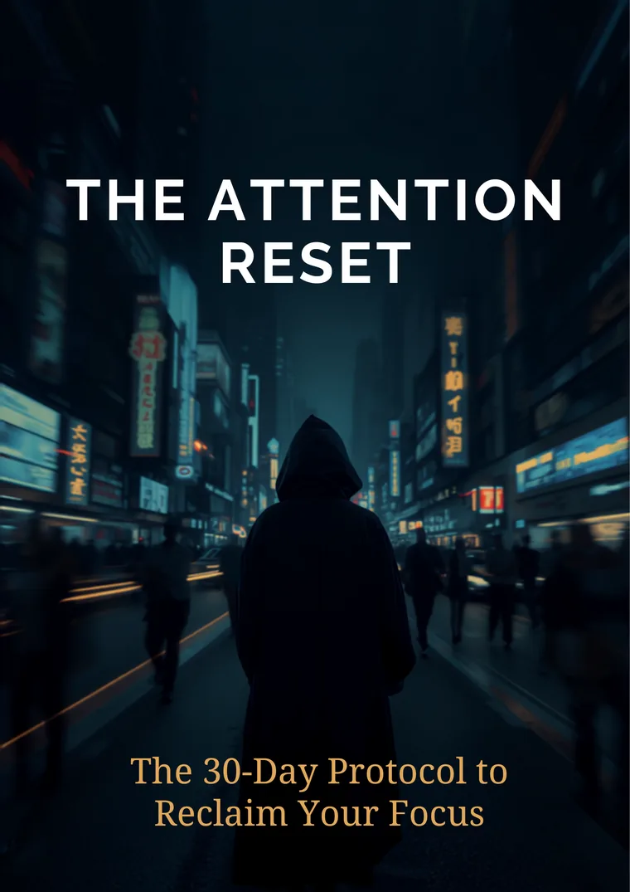

The Attention Reset
Your attention didn't get weak. It was taken.
The 30-day protocol to take it back — one 15-minute task a day.
Start Day 1 — $19.99Instant PDF download · 30-day protocol · Science-backed

You check your phone 50 to 100 times a day. Most of those times, you don't remember deciding to.
You open an app for one thing and surface forty minutes later, unsure where the time went.
You used to finish books. Now a single page feels like effort.
And silence — waiting in line, the first minute in bed — feels unbearable. So you fill it.
This is not a willpower problem.
It's an engineering problem.
Every app on your home screen is maintained by teams of engineers whose job is to keep you there. You bring willpower to that fight, and you lose. The answer isn't more guilt. It's a counter-protocol — a system designed as deliberately as the one working against you.
What's inside
Four weeks. One task a day.
-
Week 1
Audit & Interrupt
See exactly where your attention goes, and break the automatic reach.
-
Week 2
Environment Redesign
Rebuild your phone, spaces, and defaults so the easy path is the focused one.
-
Week 3
Rebuild Deep Focus
Train sustained attention back up, from ten minutes to a full deep work block.
-
Week 4
Identity & Systems
Make it permanent — an attention operating system you wrote yourself.
- 30 daily tasks, each with the science behind it
- Weekly tracker to log screen time and focus blocks
- Relapse protocol card for the days you slip
- Maintenance system for life after Day 30
- Further-reading toolkit to go deeper
Built on the research of
- Anna LembkeDopamine Nation
- Cal NewportDeep Work
- Johann HariStolen Focus
- Gloria MarkAttention Span
- James ClearAtomic Habits
Not ready for the full protocol?
Get the free 48-Hour Dopamine Reset — a weekend version to feel the difference first.
By Day 30
What changes in one month
- Screen time down 40–60% from your Day 1 baseline
- Your first 90-minute deep work block in years
- Reading books again — and finishing them
- Phone-free mornings and evenings, by default
- A written attention operating system you can keep for life
-
“I read a whole book last weekend. I hadn't done that since college. Week 3 is where it clicked.”
Daniel R.Software engineer, 29 -
“Screen time went from 7 hours to under 3. The tasks are small enough that I actually did them.”
Maya T.Grad student, 24 -
“The relapse card is the reason this one stuck when everything else failed. No guilt, just a reset.”
Chris B.Designer, 35
The Attention Reset
$19.99
One-time purchase. Yours forever.
- The full 30-day protocol (PDF, ~90 pages)
- Weekly tracker & relapse protocol card
- Maintenance system for after Day 30
- Further-reading toolkit
30-day money-back guarantee. If it doesn't change how you use your phone, reply to your receipt for a full refund.
Secure checkout · Instant download
Questions
How much time does it take per day?
Most tasks take 10 to 15 minutes. A few in Week 3 ask for a longer focus block, but you build up to those gradually.
What if I need my phone for work?
The protocol never asks you to give up your phone. It targets compulsive, unconscious use — work tools, messages, and calls stay untouched.
Is this a digital detox?
No. Detoxes end, and the old habits come back. This is a rebuild — you change the environment and the systems, so the results hold after Day 30.
What format is it?
A PDF ebook, delivered instantly after checkout. Read it on any device — or print it, which the protocol would quietly approve of.
What if I slip up?
You will — it's expected and planned for. The relapse protocol card gives you a 5-minute reset routine, so one bad evening never becomes a bad week.
The feed will still be there.
Your attention won't.
Start Day 1 — $19.99
Instant PDF download · 30-day money-back guarantee